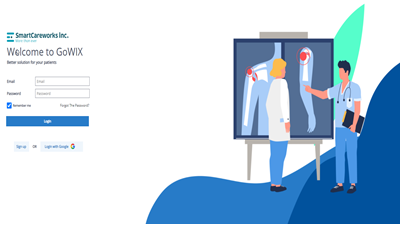

- #gowix
- #extension
- #radiologist
GoWIX :) | 확장프로그램 GoWIX Extension 출시기념 설치 및 적용
가이드 | GoWIX 따라하기, GoWIX 가이드, 이렇게 편할수가.. |
스마트케어웍스 주식회사 | [04559] 서울특별시 중구 창경궁로 6
부성빌딩 1201 SmartCareworks Inc. | Connect, Not install | Support
Modern Web browsers such as Google Chrome and Microsoft
Edge.
조회수 1억회 · 1개월 전
SmartCareWorks
151만 명
댓글을 입력하세요 박진영 님
-
SMCW | 스마트케어웍스 홈페이지 단장완료! 구경오세요~ | SmartCareWorks Web Site, SmartCareWorks, GoWIX, GoStitching, GoDR | 스마트케어웍스 주식회사 | [04559] 서울특별시 중구 창경궁로 6 부성빌딩 1201 SmartCareworks Inc. | Connect, Not install | Support Modern Web browsers such as Google Chrome and Microsoft Edge. SmartCareWorks 조회수 2백만 회 · 그저께
-
GoWIX | 세상에서 제일 쉬운 GoWIX 회원가입 가이드. 쉽다쉬워~ | GoWIX sign-up guide, SmartCareWorks, GoWIX, GoStitching, GoDR | 스마트케어웍스 주식회사 | [04559] 서울특별시 중구 창경궁로 6 부성빌딩 1201 SmartCareworks Inc. | Connect, Not install | Support Modern Web browsers such as Google Chrome and Microsoft Edge. SmartCareWorks 조회수 4백만 회 · 3일전
-
ERROR | 502 Bad Gateway 에려 해결 가이드! 이것만 보면 관련된 모든 에러해결 가능! | help error, SmartCareWorks, GoWIX, GoStitching, GoDR | 스마트케어웍스 주식회사 | [04559] 서울특별시 중구 창경궁로 6 부성빌딩 1201 SmartCareworks Inc. | Connect, Not install | Support Modern Web browsers such as Google Chrome and Microsoft Edge. SmartCareWorks 조회수 1천만 회 · 1개월 전